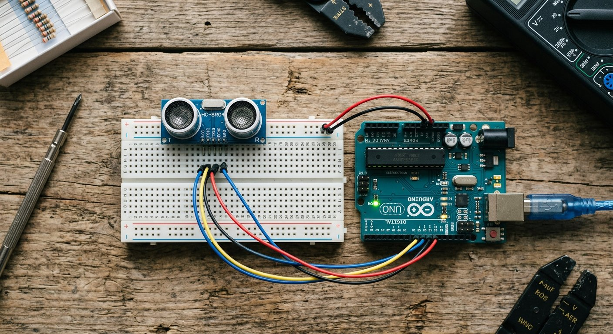

Qué cubre esta guía
- Cómo funciona: el tiempo de vuelo del sonido
- Especificaciones y límites del HC-SR04
- Conexión de hardware: TRIG y ECHO
- La fórmula: de microsegundos a centímetros
- Código Arduino: medición con pulseIn
- Filtrado de lecturas con mediana
- Limitaciones: ángulo y superficie
- Proyecto: radar con servo y Processing
- Problemas comunes y soluciones
- Preguntas frecuentes
Cómo funciona: el tiempo de vuelo del sonido
El HC-SR04 mide distancias usando el mismo principio que un sonar: el tiempo de vuelo del sonido. El sensor emite un pulso ultrasónico de 40 kHz por su transductor emisor, el sonido viaja por el aire, rebota en el primer objeto que encuentra y regresa al transductor receptor. Midiendo cuánto tarda el eco en volver, y conociendo la velocidad del sonido, se calcula la distancia al objeto.
La velocidad del sonido en el aire es de aproximadamente 343 metros por segundo a temperatura ambiente (20 °C). Como el sonido hace el viaje de ida y de vuelta, la distancia real es la mitad del camino total recorrido — un detalle que se refleja en la fórmula que verás más adelante.
Especificaciones y límites del HC-SR04
| Parámetro | Valor típico |
|---|---|
| Voltaje de alimentación | 5 V |
| Rango de medición | 2 – 400 cm (útil en la práctica) |
| Precisión | ~3 mm en condiciones ideales |
| Frecuencia del ultrasonido | 40 kHz |
| Ángulo efectivo | ~15° (cono de detección) |
| Corriente de trabajo | 15 mA |
Conexión de hardware: TRIG y ECHO
El módulo tiene cuatro pines. La conexión a un Arduino Uno es directa y no requiere componentes adicionales:
HC-SR04 Arduino Uno
-------- -----------
VCC --> 5V
TRIG --> Pin digital 9
ECHO --> Pin digital 10
GND --> GND- TRIG (disparador): el Arduino envía un pulso alto de 10 microsegundos para ordenar al sensor que emita el ultrasonido.
- ECHO (eco): el sensor devuelve un pulso alto cuya duración es proporcional al tiempo que tardó el sonido en ir y volver.
La fórmula: de microsegundos a centímetros
La función pulseIn() devuelve la duración del pulso ECHO en microsegundos. Para convertirlo en distancia se aplica la fórmula del tiempo de vuelo:
distancia_cm = (duracion_microsegundos * velocidad_del_sonido) / 2
Con velocidad del sonido = 0.0343 cm/microsegundo:
distancia_cm = duracion_microsegundos / 58El factor 58 proviene de agrupar las constantes: multiplicar por 0.0343 y dividir por 2 es lo mismo que dividir por 58.3, que se redondea a 58. Esa es la fórmula que verás en la mayoría de los tutoriales, y conviene entenderla en lugar de solo copiarla, porque te permite ajustar la velocidad del sonido si trabajas a temperaturas muy distintas.
Código Arduino: medición con pulseIn
const int PIN_TRIG = 9;
const int PIN_ECHO = 10;
void setup() {
pinMode(PIN_TRIG, OUTPUT);
pinMode(PIN_ECHO, INPUT);
Serial.begin(9600);
}
void loop() {
// Asegura un disparo limpio
digitalWrite(PIN_TRIG, LOW);
delayMicroseconds(2);
// Pulso de 10 microsegundos para disparar la medicion
digitalWrite(PIN_TRIG, HIGH);
delayMicroseconds(10);
digitalWrite(PIN_TRIG, LOW);
// Mide la duracion del eco en microsegundos
long duracion = pulseIn(PIN_ECHO, HIGH);
// Convierte a centimetros (dividir por 58)
float distancia = duracion / 58.0;
Serial.print("Distancia: ");
Serial.print(distancia);
Serial.println(" cm");
delay(200); // pequena pausa entre mediciones
}Este es el esqueleto básico que sirve de base para todo lo demás: un robot evasor de obstáculos usa esta misma distancia en un condicional para frenar y girar; un medidor de nivel la muestra en una pantalla. La medición es tan simple que el verdadero trabajo está en filtrarla e interpretarla.
Filtrado de lecturas con mediana
En la práctica, el HC-SR04 entrega lecturas con picos ocasionales: un eco perdido devuelve 0, una reflexión extraña devuelve un valor disparatado. Para un robot, un solo valor errático puede causar una colisión. El filtro más robusto es la mediana: tomar varias lecturas, ordenarlas y quedarse con el valor central, que descarta los picos sin distorsionar la lectura como lo haría un promedio.
const int PIN_TRIG = 9;
const int PIN_ECHO = 10;
const int NUM_MEDICIONES = 5; // cantidad de lecturas para la mediana
long medirDistancia() {
long lecturas[NUM_MEDICIONES];
for (int i = 0; i < NUM_MEDICIONES; i++) {
digitalWrite(PIN_TRIG, LOW);
delayMicroseconds(2);
digitalWrite(PIN_TRIG, HIGH);
delayMicroseconds(10);
digitalWrite(PIN_TRIG, LOW);
long duracion = pulseIn(PIN_ECHO, HIGH, 30000); // timeout de 30 ms
lecturas[i] = duracion / 58;
delay(10);
}
// Ordenamiento simple por insercion
for (int i = 0; i < NUM_MEDICIONES; i++) {
for (int j = i + 1; j < NUM_MEDICIONES; j++) {
if (lecturas[j] < lecturas[i]) {
long tmp = lecturas[i];
lecturas[i] = lecturas[j];
lecturas[j] = tmp;
}
}
}
return lecturas[NUM_MEDICIONES / 2]; // valor central (mediana)
}
void setup() {
pinMode(PIN_TRIG, OUTPUT);
pinMode(PIN_ECHO, INPUT);
Serial.begin(9600);
}
void loop() {
long distancia = medirDistancia();
Serial.print("Distancia filtrada: ");
Serial.print(distancia);
Serial.println(" cm");
delay(100);
}El parámetro timeout de pulseIn() (aquí 30 ms) evita que el programa se quede esperando indefinidamente cuando no hay eco, una mejora importante sobre la versión básica.
Limitaciones: ángulo y superficie
- Ángulo de detección: el sensor "ve" en un cono de unos 15°. Un objeto muy inclinado respecto al sensor refleja el sonido hacia otro lado y no se detecta.
- Superficie del objeto: las superficies duras, planas y perpendiculares reflejan bien; las superficies blandas (telas, espuma) absorben el sonido y dan lecturas débiles o nulas.
- Objetos pequeños o redondeados: dispersan el eco y reducen el alcance efectivo.
- Temperatura: altera la velocidad del sonido; para mediciones de alta precisión se corrige el factor con un sensor de temperatura.
Proyecto: radar con servo y Processing
El proyecto estrella con el HC-SR04 es el radar ultrasónico: montas el sensor sobre un servomotor que barre de 0 a 180 grados, registras la distancia en cada ángulo y envías los datos por el puerto serie a Processing, que dibuja en pantalla un mapa tipo radar de los objetos del entorno.
#include <Servo.h>
const int PIN_TRIG = 9;
const int PIN_ECHO = 10;
Servo servo;
void setup() {
pinMode(PIN_TRIG, OUTPUT);
pinMode(PIN_ECHO, INPUT);
servo.attach(6);
Serial.begin(9600);
}
void loop() {
for (int angulo = 0; angulo <= 180; angulo += 2) {
servo.write(angulo);
delay(30);
long distancia = medirDistancia(); // usa la funcion de la seccion anterior
// Envia el par angulo:distancia por el puerto serie
Serial.print(angulo);
Serial.print(",");
Serial.println(distancia);
}
for (int angulo = 180; angulo >= 0; angulo -= 2) {
servo.write(angulo);
delay(30);
long distancia = medirDistancia();
Serial.print(angulo);
Serial.print(",");
Serial.println(distancia);
}
}El formato angulo,distancia por línea es fácil de parsear desde Processing o Python. La versión completa, con el código de visualización en pantalla, está en la guía del radar con sensor ultrasónico y Processing ya publicada en este sitio.
Problemas comunes y soluciones
| Síntoma | Causa probable | Solución |
|---|---|---|
| El sensor siempre devuelve 0 | TRIG/ECHO cruzados o cable suelto | Verificar que TRIG va al pin 9 y ECHO al pin 10 |
| Lecturas con saltos grandes | Ecos perdidos o ruido | Aplicar filtro de mediana y timeout en pulseIn |
| El sensor no detecta objetos cercanos | Objeto a menos de 2 cm o muy inclinado | Alejar el objeto y orientarlo perpendicular al sensor |
| Valores que no cambian | Objeto fuera de rango o superficie absorbente | Probar con una superficie dura y plana a ~30 cm |
| El programa se cuelga | pulseIn sin timeout esperando un eco inexistente | Agregar el parámetro timeout a pulseIn |
Conclusión
El HC-SR04 es, probablemente, el sensor de distancia más usado en proyectos educativos: se conecta con cuatro cables, su principio de funcionamiento (tiempo de vuelo) es intuitivo y da pie a proyectos espectaculares como el radar. Domina la fórmula, aplica siempre un filtro de mediana y respeta sus límites de ángulo y superficie, y tendrás una herramienta de medición confiable para robots evasores, medidores de nivel y sistemas de proximidad. El siguiente paso natural es el sensor DHT22 de temperatura y humedad, o directamente el proyecto completo de radar.
Preguntas frecuentes
¿Cómo mide la distancia el sensor ultrasónico HC-SR04?
El HC-SR04 emite un pulso ultrasónico de 40 kHz desde su transductor emisor y mide cuánto tarda en regresar el eco reflejado por un objeto al transductor receptor. Como la velocidad del sonido en el aire es aproximadamente 343 metros por segundo, el tiempo de ida y vuelta se convierte en distancia: la distancia es la mitad del producto del tiempo por la velocidad del sonido, porque el sonido recorre dos veces el camino (ida y vuelta). Este principio se conoce como medición por tiempo de vuelo y es el mismo que usan los sonares.
¿Por qué la fórmula de distancia divide entre 2 y usa 29.1 o 58?
El sonido debe viajar del sensor al objeto y de vuelta al sensor, por lo que el tiempo medido corresponde al doble de la distancia real; por eso se divide entre 2. El factor de conversión aparece porque se pasa de microsegundos a centímetros: con la velocidad del sonido de 343 m/s (0.0343 cm por microsegundo), la distancia en cm es (tiempo en µs × 0.0343) / 2, que se simplifica como tiempo / 58. El valor 29.1 (o 29) aparece en algunas fórmulas cuando se usa la velocidad en otra unidad o se expresa de forma distinta; usando 58 se obtienen centímetros directamente.
¿Qué precisión y alcance tiene el HC-SR04?
El HC-SR04 tiene un rango útil aproximado de 2 a 400 centímetros, con una precisión típica de unos 3 milímetros en condiciones ideales, aunque en la práctica los valores por debajo de 2 cm y por encima de 3-4 metros pierden confiabilidad. La precisión real depende del ángulo del objeto (funciona mejor si la superficie es perpendicular al sensor), del material de la superficie (las superficies duras y planas reflejan bien; las blandas o inclinadas dispersan el sonido) y de la temperatura, que altera levemente la velocidad del sonido.
¿Cómo elimino las lecturas erráticas o los saltos de distancia?
Las lecturas erráticas se eliminan con filtrado por software: toma varias mediciones seguidas (por ejemplo, 5), ordénalas y usa la mediana, el valor central, en lugar del promedio. La mediana descarta automáticamente los picos aislados —un valor de 0 cm o de 400 cm producto de un eco perdido— sin distorsionar la lectura como lo haría un promedio. Este filtro de mediana es la técnica más recomendada para el HC-SR04 y se implementa con un arreglo pequeño y una función de ordenamiento en el código.
¿El HC-SR04 funciona igual que un sensor de radar?
Funcionalmente se parece en el principio (emite una onda y escucha el eco), pero un radar usa ondas electromagnéticas y el HC-SR04 usa ondas de sonido, por lo que es técnicamente un sonar. Aun así, es el componente ideal para construir un proyecto tipo radar educativo: montando el sensor sobre un servomotor que barre de 0 a 180 grados y registrando la distancia en cada ángulo, se puede dibujar en pantalla un mapa de los objetos del entorno, que es exactamente el proyecto que se detalla en la guía del radar ultrasónico con Processing de este sitio.
Este artículo es contenido editorial independiente: no contiene ubicaciones patrocinadas ni enlaces de afiliado. Si en futuras actualizaciones se agregan enlaces a proveedores de componentes, serán identificados explícitamente. El código y las conexiones son referenciales y deben adaptarse y probarse con tu propio hardware. Si detectas un error en esta guía, por favor avísanos.
Sigue aprendiendo
Lleva este sensor al siguiente nivel con el Radar con Sensor Ultrasónico y Processing, o combínalo con más sensores en la Guía Esencial de Sensores para Arduino.
Fuentes primarias y lecturas recomendadas
Referencias que sustentan los conceptos generales de la guía. Los valores exactos pueden variar según el fabricante del módulo.
- Arduino Reference — Función pulseIn()
- Arduino Reference — Librería Servo
- All About Circuits — Referencia técnica de electrónica básica
Enlaces revisados: 13 de agosto de 2026.